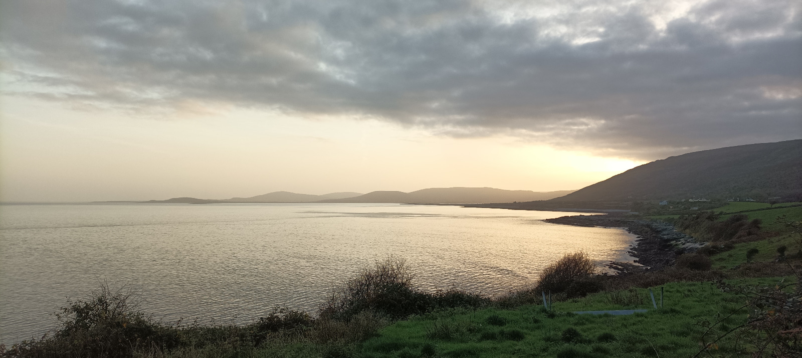

20 Black Head
0558, Friday, November 24, 2003
I can’t see more than three or five metres in front of me and I’m #brickingit. The cars can see me but my front lights aren’t strong enough to illuminate the road, so if I stumble into an obscure pothole or skid on something slippy, I’m down, and at the mercy of passing traffic. I only see the full road when cars approach me from behind because their dip lights push back the darkness. They can see me because of the red light blinking under my saddle and and my high-viz helmet and jacket. But most cars are coming the other way, probably getting to work in Galway before its inexcusable traffic kicks off. Their lights blind me, cancelling out the little torch I’ve sellotaped to my handlebar stem. I can’t tell the difference between a filled pothole and an extant pothole so I have to dodge more often than I need to. But mostly the surface is good, here in South East Galway, on the N56 heading from Oranmore down to Kilcolgan.
20.0.1 Stakeholder management
I’m heading to see Black Head lighthouse in North Clare and soon I’ll be turning right for Kinvarra, before entering the barren Burren, whose north coast I’ll be tracking all the way to the upjut of Black Head which marks one extremity of Galway Bay. I’m on another hundy k round trip, and I thought I’d stall off with sunrise at 8ish then be back before dark at 4ish, leaving me enough time for lunch and a gawk at the layks. But it turns out my #StakeholderManagement has been suboptimal and my wife thought I was only heading out for a morning spin and that I’d be back in time for the 1pm check-out which I have, in fairness to me, negotiated with the hotel. So last night we had to work out a new plan. Clearlo, it’d be too much for her to take on the Galway public transport system with a teething infant and an active six-year-old, so me not being #round in the post 1pm sequence was a non-gayer. Now lookit, lives will change forever once she passes her driving test, although she still hasn’t fully grasped its magnitude, for good or ill. Not only will she be able to head off wherever for the Doris, with or without the kids, she’ll also be able to drive out to lighthouses to rescue her craic-absorbing husband from the misery of cycling back. My mother always said the worst part of cycling coast-to-coast trips was getting there and back. She’s cycled Mizen to Malin, Land’s End to John O’Groats, the length of Vietnam, the diagonal width of America, from San Fran to Maine, and, with my aulfla as far as Melbourne, Perth to Sydney. And the biggest difficulty, in her memory at least, was getting to the start and back from the endpoint. So let me tell you, getting home from lighthouses on a bicycle is a pain in the neverendingly Gordon and - and that’s a stressed ‘and’ - with the journey’s goal achieved, it’s almost as deflating as cycling without the air in your tyres.
20.0.2 Lighting up time
In the end I agree that I’d just drive to Kinvarra, start there with the sunlight, cycle 30k out to Black Head, double back and then drive backto the hotel for 1pm. But it feels wrong cos I kinda want to cycle the whole of the Irish coast and I’d be left with another missing 25k. As it happens, I wake up at 4am and I can’t help myself. Suddenly I have the chance to do the full trip, as long as I brave the dark. So I grab my unedited bits’n’bobs from the hotel room and head out to the car where my Paul van has been sleeping for the last two nights. I’ve parked it under an overhead light so I’ll be able to see what I’m doing. The night porter wakes up as I head through reception and I ask him for some duct tape for my torch. He has none but a role of sellotape will do. I start putting my bike back together in the car park. Before driving here on Wednesday, I left the bike upside down in the morning rain so I could soften up the filth it absorbed on Paíd Morrissey’s farm, then I gave it a quick rinsearooney and loaded it in the boot of my MC Hammer. For some reason the back wheel fell off and, while that was handy for lobbing the bike in the boot, I now need a forking spanner to put it back on and for some reason I’ve not brung one. So I have to tighten the wheel with my fingers and then reconnect the chain. Afterwards, I give the unwashed drivetrain a once-over with WD40 and I’m hoping it’ll kinda clean itself over the course of the Caelan. It’s a little hack I learnt from the Worldwide School of Halfarsery. Lastly, I spray WD40 all over my filthy fingers to give them a wee wash, and then I do a lap of the car park to check the bike is working. It is, but I’d feel better if those nuts on the back wheel were fully secure. So while I’m dropping the car keys back to the hotel room, the night porter digs deep and fetches me an adjustable wrench, ledgebag that he is. I’m finally ready to Morocc’n’Ryle Nugent but before embarking, I ask him about the hack of the roads en route. The man is neither nosey nor a yapper but I have unlocked a specialist subject and he starts banging on about the entire 50k ahead of me. It’s information overload but I do at least find out that I have to swing a Human Right in Kilcolgan in order to stay on the N56. That’s all a cyclist cares about. Road numbers, turns, hills and traffic. The porter also mentions avoiding some hill but I’m not bothered by that because I was out that way once before and I know you couldn’t pave a Burren hill so it won’t be much of a climb.
20.0.3 The bright lights of Kilcolgan
I turn left out of the Oranmore Lodge, away from the village, and then a right at the roundabout. The road is lit for the first half k and it’s only then that I get the shock of the darkness. I can’t see a thing bar stars. The cars are in my eyes. The worry builds. I know I should go back but I can’t do that. I punch on for like seven clicks, dodging leaves and potholes and praying I am seen by every driver. Eventually come to a little village of Clarinbridge which has lights. I can feel my body immediately relax, like I’ve shifted from an apocalyptic movie back in to civilisation, and I’m reminded of how much effort goes in to making the world a safe place. But in truth the only danger comes from those man-killing tanks we all drive around. It’s dark again until Kilcolgan, which is a drive-through village specialising in petrol stations. I don’t need another coffee yet but I could do with recharging my emotional batteries, even though I’ve hardly been out for 30 mins. The Circle K is a hive of activity and there’s a long-haired workman with hundreds of tools splayed all over the floor. I ask him for a shot of his duct tape and then I secure the wobbly torch in place. Then I grab a croissant and ask the coffee machine to make me an Americano, but I pull it out early cos I don’t want to drink watery tar. I get yapping to the very kind manager at the counter. He asks me how I am, leaving me the chance to tell him the answer. Scared. We talk roads, and the perils of tour buses around here, and wet leaves on bike lanes in Dublin, and that triggers the doom and gloom. His 83-year-old mother says the Wisht of Ireland will be gan by 2050 and she’s glad she lived here life when she did. A little more reassuring is that there’s a bike lane between Ballinderreen (two miles from here) and Kinvarra (another seven k I’d say). I leave him to his work and finish my coffee outside in the cold. It’s not exactly Baltic City, Belarus out there, but an indoor perch goes a long way when it’s, youknowlike, nine degrees?
20.0.4 Bike lane to Kinvarra
The right turn to Kinvarra takes me to an even darker, much narrower road, and a frightening sign saying you can drive up to a hundy clicks a Paddy. All the same, I’m half glad there’s no hard shoulder now because you can’t trust the sneaky bastids with their variable width and unkempt surfaces. I go in and out of Ballinderreen village with no sign of a bike lane and I’m aghast. Eventually it shows up and I expect to feel calm, seeing as I’m no longer in danger of death, and yet I’m just the same. I’ve actually just been afraid of falling over and that’s even more likely to happen on an unwashed bike lane. It turns out to be smooth enough bar the leaves and I start to trust it except for some needless barriers which I almost crash into. The bike lane then criss-crosses the main road, which is a complete hoss. ¿Do bike-lane designers not understand that cycling is about rhythm, like dance music, and you just wanna put the needle on the record and dance to the sound of the underground. Kraftwerk grasped this connection in their Tour de France album, having already captured the Autobahn and, less brilliantly, the Trans-Europe Express. Movement is rhythm is meditation, and stopping breaks the spell. Imagine if DJs stopped their records for three or eleven seconds, every so often, and bouncers checked your ID again, like passport controllers on an overnight train.
It’s still dark when I arrive in Kinvarra and, at 0718, according to my bank records, I grab a bottle of isotonic in the Eurospar. Outside, I savour the colour of the buildings nearby. In some parts of the Wisht, they’ve gotten the memo that painting your buildings fun colours takes píosa misery out of Ireland’s greyness. Kinvarra is one of those towns and I’m looking forward to seeing it in its splendour on the way back, as it’s shaping up to be a cracking morning. I passed through here back in 2014, cycling the inland route, northwards from Ennistymon, as part of the Mizen-to-Malin trip I did with my mam, and on to Tuam later that day. I punch on, expecting another hour of darkness before sunrise, but it’s bright enough to see the road ahead of me and I can just #chill and happily do what I love.

Now that I’m not worried for my own safety, I start thinking about how people eke out a living here. Clues come from the signposts and, as I am welcomed to Co Clare, I am directed to several artisan ventures that no one presumably commissioned, bar those in need of subsistence after settling on this infertile landscape. Chocolate factories. Fine Art. Woollen mills. Later I see a sign for a perfumerie. And those are the ones successful enough to have signposts. People’s lives here may be the converse of what most of us do, living in ugly inorganic suburbs because commissioned work is nearby.
By 0755, radiance emerges from behind the mountains and the stark landscape starts to open up. We’re in The Burren now, and the coast is to my right, with low-lying fields vanishing into the mellow, ɔ-shaped Galway Bay. Tombolos connect some small islands to the land and an old castle tower sits on one, alongside a family of holiday homes, while yonder sits a old lookout tower. Further again is my destination, Black Head, a huge slab of a hill, maybe 10k from here by sight and 15k by bike, but no lighthouse is visible around its convex bend. These islands might well be in the Frank Ocean long before 2050, maybe even before our abovementioned 83-year-old friend kicks the Hyacinth. To my left are those smooth-from-afar Burren hills, laid back like supine boobs on the beach, only with the texture of cracked hands, and I think of Aphex Twin’s Windowlicker video. As I proceed, the land quality degenerates so that even the fields by the coast are becoming grassless and replaced by row after row of thick slabs of rock and sod-all soil for plants to grow in. This is a Unesco Geopark, a limestone landscape known as karst, a formation that attracts more tourists than lifers. The legendary description of The Burren says that “[t]here isn’t a tree to hang a man, water to drown a man, nor soil to bury a man”. You could, if pressed, hang a cat from one of the wind-angled trees. Astonishingly, I find some sad donkeys munching on what few plants do grow here. No source of fresh water presents itself until I’m closer to the lighthouse when I find an old stone building, like a micro-chapel, with a tiny stream inside and a sign marked drinking water. It takes little imagination to reconstruct The Great Famine of the 1840s, and the occasional derelict buildings aid in the process.
I turn right in Ballyvaughan, and at long last I’m on the home straight now. Directamundo to the lighthouse, eight or nine k, and no more need to be sifting through Google Maps. Some nice light is emerging from a hill behind me and maybe I’ll catch its beauty on my way back. For now though, almost everything in this direction remains grey. The sea. The clouds. The land. The road. Some colour emerges outside a hotel declaring its new purpose of housing refugees, with a sign erected in the blue on yellow of the Ukrainian flag, itself a simple rotation of the Clare flag. The Ukrainian flag represents their blue skies above yella corn fields, and at this hour it’s not obvious how such vibrant colours snook into the Clare flag, which would be greyscaled if based on the landscape. Exceptions include the autumn-brown ferns that populate the scabby land, and the very occasional patch of moss brings bright green joy. The exception are grassy fields or gardens right on the coast.

Standing on the road, at the entrance to his homestead, is a man wearing a Connacht Rugby gilet. I say hello and he looks like he’s up for the chats so I stop and yap, before remembering to stfu and listen. It’s a bit of a frankly work on of mine. I can fill any gap with shite talk so I have to remember to stall the ball and let the other person take a moment if they need it. It turns out he’s waiting for a delivery of concrete to pave the garden and give the daughter a patch for cycling. I forget to ask him if she’d be allowed out on the road to cycle because that’s one of the big issues with rural Ireland. It’s just not a safe place unless you’re inside a vehicle, and even then there’s a hierarchy. It’s a big reason why I’ve never wanted to live in the countryside. He tells me about the marauding buses and points to a corner on the road where they get jammed up. If they meet there at just the wrong time, it can take fully half an hour to clear the build up of cars. He said he’s offered a bit of his land to the council so they can widen the road, but to no avail. The delivery lorry approaches and I stall on, wondering to myself how much land the nation’s farmers would be willing sacrifice as part of a safer journeys program.
The lighthouse itself is as disappointing as I expected, being just a wee light on top of a scaldy box. Some commissioned graffiti would liven it up and bring some colour to the bald hill. But the real disappointment arises from the convex shape of Black Head causing the land to curve away from the eye after a couple of hundred metres in either direction. There is none of the usual sense that the lighthouse marks the land’s endpoint and its position can only be appreciated from an aerial view. The situation feels like a miniature version of the entire planet, where you must content yourself with your local surroundings, and the bigger picture can only be seen from a satellite. A tiny locked gate marks the thin path to the lonesome building and a sign says no entry. Of course I step over the low wall and scuttle around in my bicycle shoes trying to find a good spot for a snap, but soon I have to be careful as the rock drops irregularly into the sea. I sit back down by the gate for a breakfast of pistachios and oranges, and try to admire the view of Connemara across the bay, but now I can feel the teeny wind in my cold body and there is no shelter. It’s like begging on the Ha’penny Bridge, so I just hit the Dermot and soak up the last of the sunrise on the way back.
I aim for a real breakfast in Ballyvaughan and, when I get there, I push straight on to Kinvarra to get the clicks under my belt, savouring the blue skies all the way. By 1030, Wild Beans cafe is hopping, with its Nordy owner setting the tone, so I guzzle a pair of quality Americanos and scribble down some notes, while finally getting in a wee gawk at local latte drinkers, some of whom are tourists. The cycle home is a joy for once, with the wind on my back and the blue skies blazing. After Kinvarra, I see a sign saying “No splitting of farms for greenway”, and it seems that this is the faultline over which the battle will take place in the coming decades between farmers and those looking for safe cycling routes. A similar argument was made in the Save the Glen campaign twenty years ago, when the protesters, camping in the ancient woods, argued that the natural habitat of the animals would be ruined. I’m back in time for checkout at 1, and we all stall off to Salthill to check out the Atlantaquaria, a marine zoo. Outside, Black Head is visible across the bay, with its blackness highlighted by the setting sun.